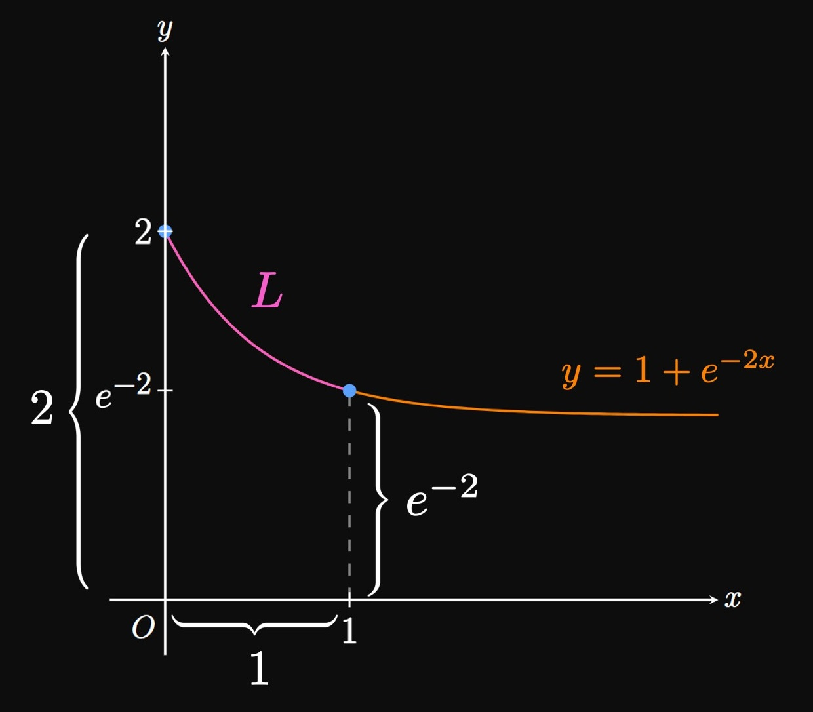

SOLUTION
If \(f'\) is continuous on \([a, b],\) then the
arc length of the curve \(y = f(x)\)
over \(a \leq x \leq b\) is given by
\[
L = \int_a^b \sqrt{1 + \parbr{f'(x)}^2} \di x \pd
\]
Or if \(g'\) is continuous on \([c, d],\) then the arc length of the curve \(x = g(y)\)
over \(c \leq y \leq d\) is
\[
L = \int_c^d \sqrt{1 + \parbr{g'(y)}^2} \di y \pd
\]
EXERCISE 2
For
\[\ds y = x + \sin x \cmaa 0 \leq x \leq 3\]
set up the integral for the arc length of the curve.
Use a calculator to compute the integral to three decimal places.
SOLUTION
We see \(\textderiv{y}{x} = 1 + \cos x,\)
so
\[\sqrt{1 + \par{\deriv{y}{x}}^2} = \sqrt{1 + (1 + \cos x)^2} \pd\]
The integral setup for the arc length of the curve over \([0, 3]\) is therefore
\[
\ba
L &= \int_0^3 \sqrt{1 + (1 + \cos x)^2} \di x \nl
&= \boxed{\int_0^3 \sqrt{2 + 2 \cos x + \cos^2 x} \di x} \nl
&\approx 4.612 \pd
\ea
\]
EXERCISE 3
For
\[\ds x = \sin \par{y^2} \cmaa 0 \leq y \leq 1\]
set up the integral for the arc length of the curve.
Use a calculator to compute the integral to three decimal places.
SOLUTION
Because \(\textderiv{x}{y} = 2y \cos \par{y^2},\)
we have
\[\sqrt{1 + \par{\deriv{x}{y}}^2} = \sqrt{1 + \parbr{2y \cos \par{y^2}}^2} \pd\]
The integral setup for the arc length of the curve over \([0, 1]\) is therefore
\[
\ba
L &= \int_0^1 \sqrt{1 + \parbr{2y \cos \par{y^2}}^2} \di y \nl
&= \boxed{\int_0^1 \sqrt{1 + 4y^2 \cos^2 \par{y^2}} \di y} \nl
&\approx 1.349 \pd
\ea
\]
EXERCISE 4
For
\[\ds y = e^{-x^2} \cmaa 1 \leq x \leq 4\]
set up the integral for the arc length of the curve.
Use a calculator to compute the integral to three decimal places.
SOLUTION
We see \(\textderiv{y}{x} = -2x e^{-x^2},\)
from which
\[\sqrt{1 + \par{\deriv{y}{x}}^2} = \sqrt{1 + \par{-2x e^{-x^2}}^2} \pd\]
The integral setup for the arc length of the curve over \([1, 4]\) is therefore
\[
\ba
L &= \int_1^4 \sqrt{1 + \par{-2x e^{-x^2}}^2} \di x \nl
&= \boxed{\int_1^4 \sqrt{1 + 4x^2 e^{-2x^2}} \di x} \nl
&\approx 3.076 \pd
\ea
\]
EXERCISE 5
For
\[\ds x = \sqrt{y^3 + 2} \cmaa 1 \leq y \leq 3\]
set up the integral for the arc length of the curve.
Use a calculator to compute the integral to three decimal places.
SOLUTION
Differentiating the function, we see
\[\deriv{x}{y} = \frac{3y^2}{2 \sqrt{y^3 + 2}} \pd\]
Thus, we have
\[\sqrt{1 + \par{\deriv{x}{y}}^2} = \sqrt{1 + \par{\frac{3y^2}{2 \sqrt{y^3 + 2}}}^2} \pd\]
The integral setup for the arc length of the curve over \([1, 3]\) is therefore
\[
\ba
L &= \int_1^3 \sqrt{1 + \par{\frac{3y^2}{2 \sqrt{y^3 + 2}}}^2} \di y \nl
&= \boxed{\int_1^3 \sqrt{1 + \frac{9y^4}{4 \par{y^3 + 2}}} \di y} \nl
&\approx 4.193 \pd
\ea
\]
EXERCISE 6
For
\[\ds y = 4 + \cos^2 x \cmaa \frac{\pi}{6} \leq x \leq \frac{\pi}{4}\]
set up the integral for the arc length of the curve.
Use a calculator to compute the integral to three decimal places.
SOLUTION
Observe that \(\textderiv{y}{x} = -2 \cos x \sin x\)
and
\[\sqrt{1 + \par{\deriv{y}{x}}^2} = \sqrt{1 + (-2 \cos x \sin x)^2} \pd\]
The integral setup for the arc length of the curve over \([\pi/6, \pi/4]\) is therefore
\[
\ba
L &= \int_{\pi/6}^{\pi/4} \sqrt{1 + (-2 \cos x \sin x)^2} \di x \nl
&= \boxed{\int_{\pi/6}^{\pi/4} \sqrt{1 + 4 \cos^2 x \sin^2 x} \di x} \nl
&\approx 0.362 \pd
\ea
\]
EXERCISE 7
For
\[\ds y = \ln \par{x^4} \cmaa e \leq x \leq 2e\]
set up the integral for the arc length of the curve.
Use a calculator to compute the integral to three decimal places.
SOLUTION
We rewrite \(\ln \par{x^4}\) as \(4 \ln \abs x.\)
Because \(\textderiv{y}{x} = 4/x,\)
we see
\[\sqrt{1 + \par{\deriv{y}{x}}^2} = \sqrt{1 + \frac{16}{x^2}} \pd\]
The integral setup for the arc length of the curve over \([e, 2e]\) is therefore
\[
\ba
L &= \boxed{\int_e^{2e} \sqrt{1 + \frac{16}{x^2}} \di x}
\approx 3.902 \pd
\ea
\]
EXERCISE 8
For
\[\ds y = 3 + 6 x^{3/2} \cmaa 0 \leq x \leq 2\]
calculate the exact arc length of the graph over the given interval.
SOLUTION
Differentiating the function, we get
\[\deriv{y}{x} = 9 x^{1/2} \pd\]
So the arc length is given by
\[
\ba
L &= \int_0^2 \sqrt{1 + \par{\deriv{y}{x}}^2 } \di x \nl
&= \int_0^2 \sqrt{1 + 81x} \di x \pd
\ea
\]
Letting \(u = 1 + 81x,\) we find \(\dd u = 81 \di x.\)
When \(x = 0,\) \(u = 1;\) when \(x = 2,\) \(u = 163.\)
So the integral becomes
\[
\ba
L &= \tfrac{1}{81} \int_1^{163} \sqrt u \di u
= \tfrac{2}{243} \par{u^{3/2}} \intEval_1^{163} \nl
&= \boxed{\frac{2 \par{163^{3/2} - 1}}{243}} \approx 17.120 \pd
\ea
\]
EXERCISE 9
For
\[\ds y = 7 - 2 x^{3/2} \cmaa 0 \leq x \leq 3\]
calculate the exact arc length of the graph over the given interval.
SOLUTION
Differentiating the function gives
\[\deriv{y}{x} = -3x^{1/2} \pd\]
So the arc length is given by
\[
\ba
L &= \int_0^3 \sqrt{1 + \par{\deriv{y}{x}}^2 } \di x \nl
&= \int_0^3 \sqrt{1 + 9x} \di x \pd
\ea
\]
Letting \(u = 1 + 9x,\) we find \(\dd u = 9 \di x.\)
When \(x = 0,\) \(u = 1;\) when \(x = 3,\) \(u = 28.\)
So the integral becomes
\[
\ba
L &= \tfrac{1}{9} \int_1^{28} \sqrt u \di u
= \tfrac{2}{27} \par{u^{3/2}} \intEval_1^{28} \nl
&= \boxed{\frac{2 \par{28^{3/2} - 1}}{27}} \approx 10.900 \pd
\ea
\]
EXERCISE 10
For
\[\ds y = 2x \cmaa 0 \leq x \leq 4\]
calculate the exact arc length of the graph over the given interval.
SOLUTION
The length of the line \(y = 2x\) is the hypotenuse of
a right triangle with legs \(x = 4\) and \(y = 8.\)
By the Pythagorean theorem, this length is
\[L = \sqrt{4^2 + 8^2} = \sqrt{80} = \boxed{4 \sqrt 5} \approx 8.944 \pd\]
Or, using the arc length formula, we see \(\textderiv{y}{x} = 2\)
and so
\[
L = \int_0^4 \sqrt{1 + (2)^2} \di x = \par{\sqrt 5} x \intEval_0^4 = 4 \sqrt 5 \pd
\]
EXERCISE 11
For
\[\ds y = \acos x + \asin x \cmaa -1 \leq x \leq 1\]
calculate the exact arc length of the graph over the given interval.
SOLUTION
Differentiating the function shows
\[\deriv{y}{x} = \frac{-1}{\sqrt{1 - x^2}} + \frac{1}{\sqrt{1 - x^2}} = 0 \pd\]
So the arc length is
\[
\ba
L &= \int_{-1}^{1} \sqrt{1 + \par{\deriv{y}{x}}^2 } \di x \nl
&= \int_{-1}^{1} 1 \di x
= x \intEval_{-1}^{1} = \boxed{2}
\ea
\]
In fact, the graph of \(y = \acos x + \asin x\)
is the line \(y = \pi/2.\)
This line's length over \(-1 \leq x \leq 1\)
is simply \(2.\)
EXERCISE 12
For
\[\ds x = \tfrac{2}{3} (y - 1)^{3/2} \cmaa 1 \leq y \leq 4\]
calculate the exact arc length of the graph over the given interval.
SOLUTION
Differentiating the function, we see
\[\deriv{x}{y} = \tfrac{2}{3} \cdot \tfrac{3}{2} (y - 1)^{1/2} = \sqrt{y - 1} \pd\]
Integrating with \(y,\) the arc length is
\[
\ba
L &= \int_1^4 \sqrt{1 + \par{\deriv{x}{y}}^2 } \di y \nl
&= \int_1^4 \sqrt{1 + (y - 1)} \di y \nl
&= \int_1^4 \sqrt y \di y = \tfrac{2}{3} y^{3/2} \intEval_1^4 \nl
&= \tfrac{2}{3} (8 - 1) = \boxed{\tfrac{14}{3}} \approx 4.667 \pd
\ea
\]
EXERCISE 13
For
\[\ds y = \ln \par{\sec x} \cmaa 0 \leq x \leq \frac{\pi}{6}\]
calculate the exact arc length of the graph over the given interval.
SOLUTION
Differentiating the function \(\ln(\sec x),\) we get
\[\deriv{y}{x} = \frac{\sec x \tan x}{\sec x} = \tan x \pd\]
The arc length over the interval \([0, \pi/6]\) is therefore
\[
L = \int_0^{\pi/6} \sqrt{1 + \par{\deriv{y}{x}}^2} \di x
= \int_0^{\pi/6} \sqrt{1 + \tan^2 x} \di x \pd
\]
Using the Pythagorean identity, we rewrite \(1 + \tan^2 x\) as \(\sec^2 x\)
to remove the root sign.
Recall that an antiderivative of \(\sec x\)
is \(\ln \abs{\sec x + \tan x}.\)
We see
\[
\ba
L &= \int_0^{\pi/6} \sqrt{\sec^2 x} \di x
= \int_0^{\pi/6} \sec x \di x \nl
&= \ln \abs{\sec x + \tan x} \intEval_0^{\pi/6}
= \ln \par{\frac{2\sqrt 3 + \sqrt 3}{3}} - \ln 1 \nl
&= \boxed{\ln \sqrt 3} \approx 0.549 \pd
\ea
\]
EXERCISE 14
For
\[\ds y = \frac{x^4}{8} + \frac{1}{4x^2} \cmaa 1 \leq x \leq 2\]
calculate the exact arc length of the graph over the given interval.
SOLUTION
Differentiating the function gives
\[\deriv{y}{x} = \frac{x^3}{2} - \frac{1}{2x^3} = \frac{x^6 - 1}{2x^3} \pd\]
So we see
\[
\ba
\sqrt{1 + \par{\deriv{y}{x}}^2} &= \sqrt{1 + \par{\frac{x^6 - 1}{2x^3}}^2} \nl
&= \sqrt{1 + \frac{x^{12} - 2x^6 + 1}{4x^6}} \nl
&= \sqrt{\frac{x^{12} + 2x^6 + 1}{4x^6}} \nl
&= \sqrt{\frac{\par{x^6 + 1}^2}{4x^6}} = \frac{x^6 + 1}{2x^3} \pd
\ea
\]
Hence, the arc length of the curve over \([1, 2]\) is given by
\[
\ba
L &= \int_1^2 \par{\frac{x^6 + 1}{2x^3}} \di x \nl
&= \int_1^2 \par{\frac{x^3}{2} + \frac{1}{2x^3}} \di x \nl
&= \par{\frac{x^4}{8} - \frac{1}{4 x^2}} \intEval_1^2 \nl
&= \boxed{\frac{33}{16}} = 2.0625 \pd
\ea
\]
EXERCISE 15
For
\[\ds y = \tfrac{1}{4} \ln \par{\sin 4 x} \cmaa \frac{\pi}{16} \leq x \leq \frac{\pi}{12}\]
calculate the exact arc length of the graph over the given interval.
SOLUTION
Differentiating the function \(y = \tfrac{1}{4} \ln \par{\sin 4 x},\) we see
\[\deriv{y}{x} = \frac{4 \cos 4x}{4 \sin 4x} = \cot 4x \pd\]
So, using the Pythagorean identity, we find
\[\sqrt{1 + \par{\deriv{y}{x}}^2} = \sqrt{1 + \cot^2 4x} = \sqrt{\csc^2 4x} = \abs{\csc 4x} \pd\]
The arc length is therefore
\[
L = \int_{\pi/16}^{\pi/12} \abs{\csc 4x} \di x
= \int_{\pi/16}^{\pi/12} \csc 4x \di x \pd
\]
Substituting \(u = 4x,\) we see \(\dd u = 4 \di x.\)
When \(x = \pi/16,\) \(u = \pi/4;\) when \(x = \pi/12,\)
\(u = \pi/3.\)
Hence, we see
\[
\ba
L &= \tfrac{1}{4} \int_{\pi/4}^{\pi/3} \csc u \di u
= -\tfrac{1}{4} \ln \abs{\csc u + \cot u} \intEval_{\pi/4}^{\pi/3} \nl
&=
\boxed{\frac{\ln \par{1 + \frac{1}{\sqrt 2}} - \ln \par{1 - \frac{1}{\sqrt 2}} - \ln 2 - \ln \tfrac{3}{2}}{8}}
\approx 0.083 \pd
\ea
\]
EXERCISE 16
For
\[\ds x = 2(y - 1)^2 \cmaa 0 \leq y \leq 1\]
calculate the exact arc length of the graph over the given interval.
SOLUTION
We see
\(\textderiv{x}{y} = 4(y - 1)\)
and
\[\sqrt{1 + \par{\deriv{x}{y}}^2} = \sqrt{1 + [4(y - 1)]^2} = \sqrt{1 + 16(y - 1)^2} \pd\]
Thus, the arc length is given by
\[L = \int_0^1 \sqrt{1 + 16(y - 1)^2} \di y \pd\]
We perform a trigonometric substitution with \(y - 1 = \tfrac{1}{4} \tan \theta.\)
(See Section 6.3 to review selecting trigonometric substitutions.)
Then \(\dd y = \tfrac{1}{4} \sec^2 \theta \di \theta.\)
When \(y = 0,\) \(\tan \theta = -4 \iffArrow \) \(\theta = \atan(-4);\)
when \(y = 1,\) \(\theta = 0.\)
So our integral becomes
\[
\ba
L &= \int_{\atan(-4)}^0 \sqrt{1 + \tan^2 \theta} \par{\tfrac{1}{4} \sec^2 \theta} \di \theta \nl
&= \tfrac{1}{4} \int_{\atan(-4)}^0 \sqrt{\sec^2 \theta} \par{\sec^2 \theta} \di \theta \nl
&= \tfrac{1}{4} \int_{\atan(-4)}^0 \sec^3 \theta \di \theta \pd
\ea
\]
By Example 6.2-12, we attain
\[
\ba
L &= \tfrac{1}{4} \par{\tfrac{1}{2} \sec \theta \tan \theta + \tfrac{1}{2} \ln \abs{\sec \theta + \tan \theta} }
\intEval_{\atan(-4)}^0 \nl
&= 0 - \tfrac{1}{8} \par{\sec \parbr{\atan(-4)} \tan \parbr{\atan(-4)}
+ \ln \abs{ \sec \parbr{\atan(-4)} + \tan \parbr{\atan(-4)} }} \pd
\ea
\]
Observe that \(\tan \parbr{\atan(-4)} = -4.\)
Then
\[
\ba
\sec^2 \parbr{\atan(-4)} &= \tan^2 \parbr{\atan(-4)} + 1 \nl
&= (-4)^2 + 1\nl
\implies \sec \parbr{\atan(-4)} &= \sqrt{17} \pd
\ea
\]
[We use the positive solution because \(-\pi/2 \lt \atan(-4) \lt \pi/2,\)
meaning the secant must be positive.]
So we have
\[
\ba
L &= -\tfrac{1}{8} \parbr{\sqrt{17} (-4) + \ln \par{\sqrt{17} - 4} } \nl
&= \boxed{\tfrac{1}{2} \sqrt{17} - \tfrac{1}{8} \ln \par{\sqrt{17} - 4}}
\approx 2.323 \pd
\ea
\]
EXERCISE 17
For
\[\ds x = 5 + e^{y} \cmaa 0 \leq y \leq 1\]
calculate the exact arc length of the graph over the given interval.
SOLUTION
We see \(\textderiv{x}{y} = e^y\)
and so
\[\sqrt{1 + \par{\deriv{x}{y}}^2} = \sqrt{1 + \par{e^y}^2} = \sqrt{1 + e^{2y}} \pd\]
Thus, the arc length is given by the integral
\[L = \int_0^1 \sqrt{1 + e^{2y}} \di y \pd\]
We perform a substitution with \(u = e^y;\)
then \(\dd u = e^y \di y\) \(= u \di y.\)
When \(y = 0,\) \(u = 1;\) when \(y = 1,\) \(u = e.\)
So the integral becomes
\[L = \int_1^e \frac{\sqrt{1 + u^2}}{u} \di u \pd\]
Substituting \(u = \tan \theta,\)
we see \(\dd u = \sec^2 \theta \di \theta.\)
(See Section 6.3 to review selecting trigonometric substitutions.)
We antidifferentiate \(\sqrt{1 + u^2}/u\) as follows:
\[
\ba
\int \frac{\sqrt{1 + \tan^2 \theta}}{\tan \theta} \, \sec^2 \theta \di \theta
&= \int \frac{\sec \theta}{\tan \theta} \, \sec^2 \theta \di \theta \nl
&= \int \frac{\sec^3 \theta}{\tan \theta} \di \theta
= \int \par{\frac{\tan^2 \theta + 1}{\sin \theta}} \di \theta \nl
&= \int \par{\sec \theta \tan \theta + \csc \theta} \di \theta \nl
&= \sec \theta - \ln \abs{\csc \theta + \cot \theta} \nl
&= \sqrt{1 + u^2} - \ln \abs{\frac{1 + \sqrt{1 + u^2}}{u}} \pd
\ea
\]
(We have omitted the constant \(C\) of integration.)
So the arc length is
\[
\ba
L &= \par{\sqrt{1 + u^2} - \ln \abs{\frac{1 + \sqrt{1 + u^2}}{u}}} \intEval_1^e \nl
&= \boxed{\sqrt{1 + e^2} - \ln \par{\frac{1 + \sqrt{1 + e^2}}{e}}
- \sqrt 2 + \ln \par{1 + \sqrt 2}} \nl
&\approx 2.003 \pd
\ea
\]
EXERCISE 18
Use the arc length formula to show that the distance between
the points \((x_1, y_1)\) and \((x_2, y_2)\)
on a line is
\[d = \sqrt{\par{x_2 - x_1}^2 + \par{y_2 - y_1}^2} \pd\]
SOLUTION
Because the points \((x_1, y_1)\) and \((x_2, y_2)\) lie on a line,
the slope connecting these two points is constant—namely,
\[m = \frac{y_2 - y_1}{x_2 - x_1} \pd\]
So the arc length formula gives the length of the arc—that is,
the distance between the two points—to be
\[
\ba
d &= \int_{x_1}^{x_2} \sqrt{1 + m^2} \di x
= \int_{x_1}^{x_2} \sqrt{1 + \par{\frac{y_2 - y_1}{x_2 - x_1}}^2} \di x \nl
&= \sqrt{1 + \par{\frac{y_2 - y_1}{x_2 - x_1}}^2} \int_{x_1}^{x_2} \di x
= \sqrt{1 + \par{\frac{y_2 - y_1}{x_2 - x_1}}^2} \par{x} \intEval_{x_1}^{x_2} \nl
&= \sqrt{1 + \par{\frac{y_2 - y_1}{x_2 - x_1}}^2} \par{x_2 - x_1} \nl
&= \frac{1}{\sqrt{\par{x_2 - x_1}^2}} \sqrt{\par{x_2 - x_1}^2 + \par{y_2 - y_1}^2}
\par{x_2 - x_1} \nl
&= \sqrt{\par{x_2 - x_1}^2 + \par{y_2 - y_1}^2} \cma
\ea
\]
as requested.
EXERCISE 19
The following table shows values of
the continuous function \(f'(x)\) for selected values of \(x.\)
Use a right-hand Riemann sum with the given values to estimate the arc length of
\(y = f(x)\) over \(0 \leq x \leq 8.\)
\(x\)
\(0\)
\(1\)
\(2\)
\(4\)
\(8\)
\(f'(x)\)
\(1\)
\(-\sqrt 3\)
\(-2\)
\(4\)
\(2\sqrt 2\)
SOLUTION
To be organized, let's define
\[g(x) = \sqrt{1 + [f'(x)]^2} \pd\]
Then our goal is to estimate the integral
\[L = \int_0^8 \sqrt{1 + [f'(x)]^2} \di x = \int_0^8 g(x) \di x \pd\]
We use a right-hand Riemann sum with the subintervals
\([0, 1],\) \([1, 2],\) \([2, 4],\) and \([4, 8].\)
Doing so, we attain the following approximation:
\[
\ba
\int_0^8 g(x) \di x
&\approx [g(1)](1 - 0) + [g(2)](2 - 1) + [g(4)](4 - 2) + [g(8)](8 - 4) \nl
&= g(1) + g(2) + 2g(4) + 4 g(8) \pd
\ea
\]
The following table shows the required values of \(g(x) = \sqrt{1 + [f'(x)]^2} .\)
\(x\)
\(1\)
\(2\)
\(4\)
\(8\)
\(g(x)\)
\(2\)
\(\sqrt 5\)
\(\sqrt{17}\)
\(3\)
So we have
\[
\ba
\int_0^8 g(x) \di x &\approx
2 + \sqrt 5 + 2 \sqrt{17} + 4(3) \nl
&\approx \boxed{24.482}
\ea
\]
EXERCISE 20
Suppose that \(f\) is a smooth function over \([1, 9].\)
The following table shows values of
\(f'(x)\) for selected values of \(x.\)
Use a left-hand Riemann sum with the given values to estimate the arc length of
\(y = f(x)\) over \(1 \leq x \leq 9.\)
\(x\)
\(1\)
\(3\)
\(4\)
\(6\)
\(9\)
\(f'(x)\)
\(\sqrt 3\)
\(2\)
\(3\)
\(-1\)
\(1\)
SOLUTION
To be organized, let's define
\[g(x) = \sqrt{1 + [f'(x)]^2} \pd\]
We need to approximate the integral
\[L = \int_1^9 \sqrt{1 + [f'(x)]^2} \di x = \int_1^9 g(x) \di x\]
by constructing a left-hand Riemann sum with the subintervals
\([1, 3],\) \([3, 4],\) \([4, 6],\) and \([6, 9].\)
We therefore attain
\[
\ba
\int_1^9 g(x) \di x
&\approx [g(1)](3 - 1) + [g(3)](4 - 3) + [g(4)](6 - 4) + [g(6)](9 - 6) \nl
&= 2 g(1) + g(3) + 2g(4) + 3 g(6) \pd
\ea
\]
The following table shows the required values of \(g(x) = \sqrt{1 + [f'(x)]^2}.\)
\(x\)
\(1\)
\(3\)
\(4\)
\(6\)
\(g(x)\)
\(2\)
\(\sqrt 5\)
\(\sqrt{10}\)
\(\sqrt 2\)
So we have
\[
\ba
\int_1^9 g(x) \di x &\approx
2(2) + \sqrt 5 + 2 \sqrt{10} + 3 \sqrt 2 \nl
&\approx \boxed{16.803}
\ea
\]
EXERCISE 21
An engineer models a winding road to be the shape of the curve
\[x = 2 \cos \par{\frac{y}{4}} e^{-y/40} \cmaa 0 \leq y \leq 10 \cma\]
where \(x\) and \(y\) are measured in feet.
Find the length of this road to three decimal places.
SOLUTION
Using a graphing calculator, we see
\[
\ba
L &= \int_0^{10} \sqrt{1 + \par{\deriv{}{y} \parbr{2 \cos \par{\frac{y}{4}} e^{-y/40}} }^2} \di y \nl
&\approx \boxed{10.560 \un{ft}}
\ea
\]
EXERCISE 22
A girl's kite is blown \(30\) feet due east by a gust of wind.
The kite's trajectory from \(x = 0\) feet to \(x = 30\) feet
is modeled by the parabola
\[y = 50 - \tfrac{1}{4} (x - 20)^2 \pd\]
To three decimal places, calculate the distance the kite travels.
SOLUTION
We seek the length of the trajectory from \(x = 0\) to \(x = 30.\)
Using a graphing calculator, we see
\[
\ba
L &= \int_0^{30} \sqrt{1 + \par{\deriv{}{x} \parbr{50 - \tfrac{1}{4} (x - 20)^2} }^2} \di x \nl
&\approx \boxed{131.305 \un{ft}}
\ea
\]
EXERCISE 23
To three decimal places, find the perimeter of the region
bounded by the curve \(y = 1 + e^{-2x},\) the \(x\)-axis,
the \(y\)-axis, and the line \(x = 1.\)
SOLUTION

The region is bounded by three straight sides of lengths
\(2, 1,\) and \(e^{-2}.\)
It is bounded above by the curve \(y = 1 + e^{-2x},\)
whose derivative is
\[\deriv{y}{x} = -2e^{-2x} \pd\]
Thus, the curve's length over \(0 \leq x \leq 1\) is
\[L = \int_0^1 \sqrt{1 + \par{-2e^{-2x}}^2} \di x = \int_0^1 \sqrt{1 + 4e^{-4x}} \di x \approx 1.368 \pd\]
So the region's perimeter is
\[2 + 1 + e^{-2} + 1.368 \approx \boxed{4.503}\]
EXERCISE 24
The base of a pond is the region bounded above by the parabola
\(y = 5 - \tfrac{1}{2} (x - 3)^2\)
and below by the curve \(y = \cos(x/3),\)
where \(x\) and \(y\) are both measured in meters.
Calculate the perimeter of the base to three decimal places.
SOLUTION
The two curves intersect when \(x = 0.171\)
and \(x = 6.32.\)
We therefore sum the arc lengths of both curves over \(0.171 \leq x \leq 6.32.\)
Doing so shows the perimeter of the pond to be
\[
\ba
P &= \int_{0.171}^{6.32} \sqrt{1 + \par{\deriv{}{x} \parbr{5 - \tfrac{1}{2} (x - 3)^2} }^2} \di x
+ \int_{0.171}^{6.32} \sqrt{1 + \parbr{\deriv{}{x} \par{\cos \frac{x}{3}} }^2} \di x \nl
&\approx 11.839 + 6.357 = \boxed{18.196 \un{m}^2}
\ea
\]
EXERCISE 25
For
\[y = 2 + 3t \cmaa t = 1\]
find an arc length function for the graph
starting at the given point.
SOLUTION
We note that \(\textderiv{y}{t} = 3,\) so
\[\sqrt{1 + \par{\deriv{y}{t}}^2} = \sqrt{1 + 3^2} = \sqrt{10} \pd\]
Accordingly, the arc length function starting from \(t = 1\) is, for \(x \gt 1,\)
\[s(x) = \int_1^x \sqrt{10} \di t = \sqrt{10} \, (t) \intEval_1^x = \boxed{(x - 1) \sqrt{10}}\]
EXERCISE 26
For
\[x = \tfrac{2}{3} (t - 2)^{3/2} \cmaa t = 2\]
find an arc length function for the graph
starting at the given point.
SOLUTION
We note that \(\textderiv{x}{t} = (t - 2)^{1/2},\) so
\[\sqrt{1 + \par{\deriv{x}{t}}^2} = \sqrt{1 + (t - 2)} = \sqrt{t - 1} \pd\]
Accordingly, the arc length function starting from \(t = 2\) is, for \(y \gt 2,\)
\[
\ba
s(y) &= \int_2^y \sqrt{t - 1} \di t = \tfrac{2}{3} (t - 1)^{3/2} \intEval_2^y \nl
&= \tfrac{2}{3} (y - 1)^{3/2} - \tfrac{2}{3} (2 - 1)^{3/2} \nl
&= \boxed{\tfrac{2}{3} \parbr{(y - 1)^{3/2} - 1}}
\ea
\]
EXERCISE 27
For
\[y = 1 + 2t^{3/2} \cmaa t = 0\]
find an arc length function for the graph
starting at the given point.
SOLUTION
Note that
\(\textderiv{y}{t} = 3 \sqrt t,\)
so
\[\sqrt{1 + \par{\deriv{y}{t}}^2} = \sqrt{1 + \par{3 \sqrt t}^2} = \sqrt{1 + 9t} \pd\]
The arc length function starting from \(t = 0\) is therefore
\[s(x) = \int_0^x \sqrt{1 + 9t} \di t \pd\]
Letting \(u = 1 + 9t,\) we see \(\dd u = 9 \di t.\)
When \(t = 0,\) \(u = 1;\) when \(t = x,\) \(u = 1 + 9x.\)
So the integral becomes, for \(x \gt 0,\)
\[
\ba
s(x) &= \tfrac{1}{9} \int_1^{1 + 9x} \sqrt{u} \di u \nl
&= \tfrac{2}{27} \par{u^{3/2}} \intEval_1^{1 + 9x} \nl
&= \boxed{\frac{2 \sqrt{(1 + 9x)^3} - 2}{27}}
\ea
\]
EXERCISE 28
Let \(s(x) = \int_0^x \sqrt{1 + \sin^2 t} \di t.\)
For \(x \gt 0,\) is \(s(x)\) an arc length function?
SOLUTION
By Part I of the Fundamental Theorem of Calculus, we see
\[s'(x) = \sqrt{1 + \sin^2 x} \geq \sqrt 1 = 1 \pd\]
All arc length functions satisfy \(s'(x) \geq 1.\)
So yes, \(s(x)\) is an arc length function
for all \(x \gt 0.\)
EXERCISE 29
For what values of \(x\) is
\(s(x) = \int_0^x \sqrt{\tfrac{1}{2} + t} \di t\)
an arc length function?
SOLUTION
The function \(s(x)\) is an arc length function
for all \(x\) such that \(s'(x) \geq 1.\)
By Part I of the Fundamental Theorem of Calculus, we get
\[s'(x) = \sqrt{\tfrac{1}{2} + x} \pd\]
Solving \(s'(x) \geq 1,\) we see
\[\sqrt{\tfrac{1}{2} + x} \geq 1 \iffArrow \tfrac{1}{2} + x \geq 1 \iffArrow \boxed{x \geq \tfrac{1}{2}}\]
EXERCISE 30
Over the interval \([1, x],\) \(f\) is increasing
and has an arc length function given by
\[s(x) = \int_0^x \sqrt{t^2 - 2t + 2} \di t \pd\]
If \(f(2) = 5,\) then determine the identity of \(f.\)
SOLUTION
The integrand of the arc length function takes the form
\(\sqrt{1 + [f'(t)]^2}.\)
We therefore see
\[
\ba
\sqrt{1 + [f'(t)]^2} &= \sqrt{t^2 - 2t + 2} \nl
1 + [f'(t)]^2 &= t^2 - 2t + 2 \nl
[f'(t)]^2 &= t^2 - 2t + 1 = (t - 1)^2 \nl
\implies f'(t) &= t - 1 \pd
\ea
\]
[Note that we choose the positive solution instead of \(f'(t) = -(t - 1)\)
because \(f\) is increasing and so \(f'\) must be positive.]
Solving this differential equation, we have
\[f(t) = \tfrac{1}{2} t^2 - t + C \pd\]
Then substituting the initial condition \(f(2) = 5\) shows
\[f(2) = \tfrac{1}{2} (2)^2 - 2 + C = 5 \implies C = 5 \pd\]
Hence, the identity of \(f\) is
\[f(t) = \boxed{\tfrac{1}{2} t^2 - t + 5}\]
EXERCISE 31
Let \(a\) be any real number.
Prove that the graph of any smooth function \(y = f(x)\)
has an infinite arc length over \(a \leq x \lt \infty.\)
SOLUTION
The integral expression for the arc length from \(x = a\) to \(x = \infty\) is given by
\[L = \int_a^\infty \sqrt{1 + [f'(x)]^2} \di x\]
if \(f'(x)\) is continuous for \(x \geq a.\)
Because \([f'(x)]^2 \geq 0,\) we observe that
\[\sqrt{1 + [f'(x)]^2} \geq \sqrt 1 \gt 0 \pd\]
We see
\[\int_a^\infty \sqrt 1 \di x = \int_a^\infty \di x = x \intEval_a^\infty = \infty \cma\]
so \(\int_a^\infty \sqrt 1 \di x\) diverges.
By the Comparison Test for Improper Integrals
(from Section 6.5),
the integral \(\int_a^\infty \sqrt{1 + [f'(x)]^2} \di x\)
also diverges.
Hence, the arc length \(L\) is infinite.